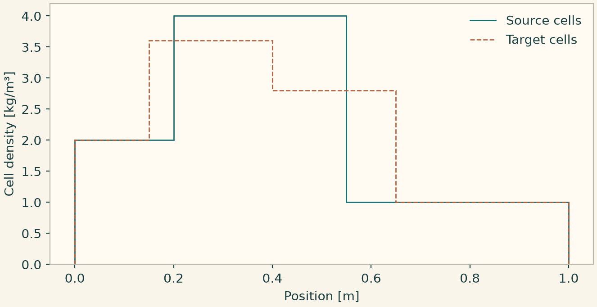
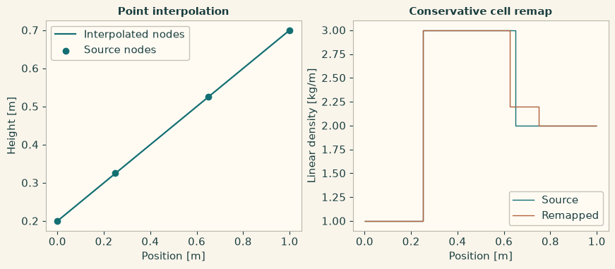
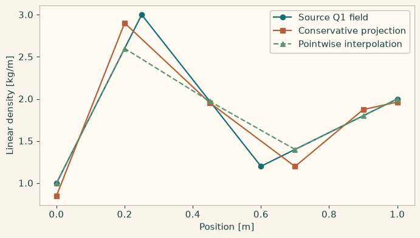
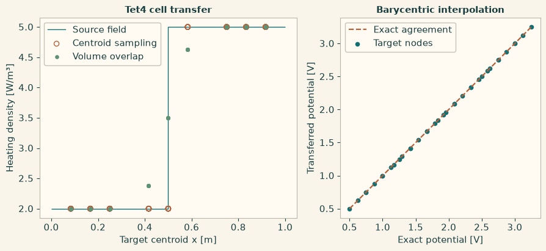
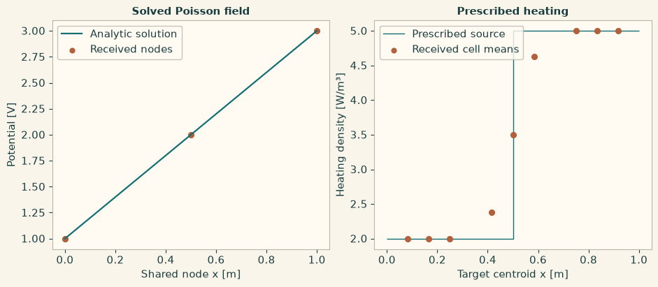

Docs › Worked numerical comparisons › Field transfer lab
9.8 Field transfer lab
9.8.1 Conservative remap between nonmatching cell edges
Start with cell averages on one line partition and transfer them to a different partition. Verify the width-weighted integral. Plot native piecewise-constant values rather than drawing a smooth interpolant.
import numpy as np
import matplotlib.pyplot as plt
import onesimulation_plot_theme as theme
from onesim.numerics.field_transfer import operators
source_edges = np.array([0.0, 0.2, 0.55, 1.0])
target_edges = np.array([0.0, 0.15, 0.4, 0.65, 0.85, 1.0])
source = np.array([2.0, 4.0, 1.0])
mapping = operators.conservative_remap(
"density transfer",
"source",
"target",
source_edges=source_edges,
target_edges=target_edges,
source_unit="kg/m^3",
target_unit="kg/m^3",
)
validation = operators.validate(mapping, source=source)
assert validation.accepted, validation.diagnostics
result = operators.apply(mapping, source)
np.testing.assert_allclose(
np.diff(target_edges) @ result.value, np.diff(source_edges) @ source
)
assert result.report.conservation_verified
theme.use_theme()
fig, ax = plt.subplots(figsize=(6.8, 3.5), layout="constrained")
ax.stairs(source, source_edges, label="Source cells")
ax.stairs(result.value, target_edges, label="Target cells", linestyle="--")
ax.set(xlabel="Position [m]", ylabel="Cell density [kg/m³]")
ax.legend(frameon=False)
plt.show()

9.8.2 Copy, interpolate and conservatively remap on a line
Copy nodal heights on an unchanged grid. Interpolate them onto a finer grid and convert centimetres to metres. Check which provider validation selects and inspect the diagnostic for a nonfinite source value. For cell averages, multiply each mean by its cell width to verify that the overlap remap preserves the total mass.
import onesim
import onesimulation_plot_theme as theme
theme.use_theme()
import matplotlib.pyplot as plt
import numpy as np
from onesim.numerics.field_transfer import operators as transfer_ops
source_x = np.array([0.0, 0.25, 0.65, 1.0])
target_x = np.linspace(0, 1, 21)
source_cm = 100 * (0.2 + 0.5 * source_x)
same_grid = transfer_ops.identity("copy heights", "coarse nodes",
unit="cm", topology="node")
copied = transfer_ops.apply(same_grid, source_cm)
np.testing.assert_array_equal(copied.value, source_cm)
linear = transfer_ops.interpolation(
"interpolate heights", "coarse nodes", "fine nodes",
source_coordinates=source_x, target_coordinates=target_x,
source_unit="cm", target_unit="m",
source_topology="node", target_topology="node",
)
preflight = transfer_ops.validate(linear, source=copied.value).require_accepted()
invalid = transfer_ops.validate(linear, source=[0.0, np.nan, 1.0, 2.0])
assert not invalid.accepted
heights = transfer_ops.apply(linear, copied.value)
np.testing.assert_allclose(heights.value, 0.2 + 0.5 * target_x)
assert heights.report.provider_id == preflight.provider_id
source_edges = np.array([0.0, 0.25, 0.65, 1.0])
target_edges = np.linspace(0, 1, 9)
source_density = np.array([1.0, 3.0, 2.0])
remap = transfer_ops.conservative_remap(
"remap cell density", "source cells", "target cells",
source_edges=source_edges, target_edges=target_edges,
source_unit="kg/m", target_unit="kg/m",
)
density = transfer_ops.apply(remap, source_density)
source_mass = source_density @ np.diff(source_edges)
target_mass = density.value @ np.diff(target_edges)
np.testing.assert_allclose(target_mass, source_mass, rtol=1e-12)
assert density.report.conservation_verified
print(f"Interpolation provider: {preflight.provider_id}")
print(f"Rejected input: {invalid.diagnostics[0]}")
print(f"Integrated mass: {source_mass:.3f} kg → {target_mass:.3f} kg")
fig, (ax, cells_ax) = plt.subplots(1, 2, figsize=(8.6, 3.7), layout="constrained")
ax.plot(target_x, heights.value, label="Interpolated nodes")
ax.scatter(source_x, source_cm / 100, label="Source nodes", zorder=3)
ax.set(title="Point interpolation", xlabel="Position [m]", ylabel="Height [m]")
ax.legend()
cells_ax.stairs(source_density, source_edges, label="Source", baseline=None)
cells_ax.stairs(density.value, target_edges, label="Remapped", baseline=None)
cells_ax.set(title="Conservative cell remap", xlabel="Position [m]",
ylabel="Linear density [kg/m]")
cells_ax.legend()
plt.show()

Linear interpolation and conservative transfer on different one-dimensional grids.
9.8.3 Configure a runtime for conservative nodal projection
Wrap a transfer descriptor in a named operator. Configure the runtime to assemble the Q1 projection with the NumPy kernel and solve its mass system with a sparse direct solver. Compare with pointwise interpolation on the same target nodes. The area under the piecewise-linear field is its total mass.
import onesim
import onesimulation_plot_theme as theme
theme.use_theme()
import matplotlib.pyplot as plt
import numpy as np
from onesim.numerics.field_transfer import operators as transfer_ops
from onesim.numerics.field_transfer.state.models.transfer_descriptor import TransferDescriptor
from onesim.numerics.linear import SparseDirect
source_x = (0.0, 0.25, 0.6, 1.0)
target_x = (0.0, 0.2, 0.45, 0.7, 0.9, 1.0)
source = np.array([1.0, 3.0, 1.2, 2.0])
descriptor = TransferDescriptor(
source_layout_id="coarse Q1 line",
target_layout_id="fine Q1 line",
conservative=True,
mapping_kind="cartesian_conservative_nodal_projection",
source_axes=(source_x,),
target_axes=(target_x,),
source_topology="node",
target_topology="node",
source_unit="kg/m",
target_unit="kg/m",
)
projection = transfer_ops.operator("project Q1 nodal density", descriptor)
runtime = transfer_ops.runtime(linear=SparseDirect().configuration(), projection_kernel="numpy")
transfer_ops.validate(projection, source=source, runtime=runtime).require_accepted()
projected = transfer_ops.apply(projection, source, runtime=runtime)
pointwise = np.interp(target_x, source_x, source)
m_source = np.trapezoid(source, source_x)
m_projected = np.trapezoid(projected.value, target_x)
m_pointwise = np.trapezoid(pointwise, target_x)
np.testing.assert_allclose(m_projected, m_source, rtol=1e-12)
assert projected.report.conservation_verified
assert projected.report.linear_solver_reports
assert abs(m_pointwise - m_source) > 1e-3
print(f"Projection provider: {projected.report.provider_id}")
print(f"Mass [kg] — source {m_source:.5f}, projected {m_projected:.5f}, "
f"pointwise {m_pointwise:.5f}")
fig, ax = plt.subplots(figsize=(6.8, 3.8), layout="constrained")
ax.plot(source_x, source, "o-", label="Source Q1 field")
ax.plot(target_x, projected.value, "s-", label="Conservative projection")
ax.plot(target_x, pointwise, "^--", label="Pointwise interpolation")
ax.set(xlabel="Position [m]", ylabel="Linear density [kg/m]")
ax.legend()
plt.show()

Nodal projection and pointwise interpolation on the same target grid.
9.8.4 Transfer cell and nodal fields between simplex meshes
Give two Tet4 meshes of the same box to the cell operators. Centroid projection samples the source cell containing each target centroid. The overlap remap integrates across cell intersections to preserve total power. For a nodal field, provide the ordered coordinates and connectivity of the source mesh and check that barycentric interpolation reproduces an affine potential.
import onesim
import onesimulation_plot_theme as theme
theme.use_theme()
import matplotlib.pyplot as plt
import numpy as np
from onesim.cad.d3 import Box
from onesim.meshing import StructuredTetrahedralMesher
from onesim.numerics.field_transfer import operators as transfer_ops
box = Box(length=1, width=1, height=1)
source_mesh = StructuredTetrahedralMesher(cells=(2, 1, 1)).generate(box)
target_mesh = StructuredTetrahedralMesher(cells=(3, 2, 2)).generate(box)
source_cells = source_mesh.to_carrier()
target_cells = target_mesh.to_carrier()
source_x = source_mesh.coordinates[source_mesh.cells, 0].mean(axis=1)
target_x = target_mesh.coordinates[target_mesh.cells, 0].mean(axis=1)
source_density = np.where(source_x < 0.5, 2.0, 5.0)
sample = transfer_ops.tetrahedral_cell_projection(
"sample at target centroids", source_cells, target_cells, unit="W/m^3",
)
overlap = transfer_ops.tetrahedral_conservative_remap(
"remap by Tet4 intersection volumes", source_cells, target_cells, unit="W/m^3",
)
sampled = transfer_ops.apply(sample, source_density)
remapped = transfer_ops.apply(overlap, source_density)
power_in = source_density @ np.asarray(source_cells.measures)
power_out = remapped.value @ np.asarray(target_cells.measures)
np.testing.assert_allclose(power_out, power_in, rtol=1e-11)
assert not sampled.report.conservative
assert remapped.report.conservation_verified
assert np.any((remapped.value > 2.01) & (remapped.value < 4.99))
# Choose an affine nodal field with a known value at every target node.
def potential(points):
return 1 + points @ np.array([2.0, -0.5, 0.25])
def nodal_support(mesh):
return {
"carrier_id": mesh.to_carrier(location="node").carrier_id,
"carrier_kind": "node",
"coordinate_unit": "m",
"coordinates": mesh.coordinates.tolist(),
"connectivity": mesh.cells.tolist(),
}
interpolate = transfer_ops.simplex_nodal_interpolation(
"barycentric interpolation",
nodal_support(source_mesh), nodal_support(target_mesh),
unit="V",
)
target_potential = transfer_ops.apply(interpolate, potential(source_mesh.coordinates))
reference = potential(target_mesh.coordinates)
np.testing.assert_allclose(target_potential.value, reference, atol=1e-12)
print(f"Integrated power: {power_in:.6f} W → {power_out:.6f} W")
print(f"Affine test: {reference.size} target nodes")
fig, (cell_ax, node_ax) = plt.subplots(1, 2, figsize=(9.3, 4.0), layout="constrained")
cell_ax.stairs([2, 5], [0, 0.5, 1], label="Source field", baseline=None)
cell_ax.scatter(target_x, sampled.value, s=34, facecolors="none",
edgecolors="C1", label="Centroid sampling")
cell_ax.scatter(target_x, remapped.value, s=14, color="C2", label="Volume overlap")
cell_ax.set(title="Tet4 cell transfer", xlabel="Target centroid x [m]",
ylabel="Heating density [W/m³]")
cell_ax.legend()
node_ax.plot([reference.min(), reference.max()], [reference.min(), reference.max()],
"--", color="C1", label="Exact agreement")
node_ax.scatter(reference, target_potential.value, s=20, label="Target nodes")
node_ax.set(title="Barycentric interpolation", xlabel="Exact potential [V]",
ylabel="Transferred potential [V]", aspect="equal")
node_ax.legend()
plt.show()

Centroid sampling, volume-overlap remapping and nodal interpolation on Tet4 meshes.
9.8.5 Resolve solved and prescribed fields for named inputs
Declare an input from a Poisson result and resolve it on the node layout published by the solve. Declare heating directly from cell data and resolve it on a different Tet4 mesh using conservative remapping. The two reports record the named receiving ports, mapping methods and source identities.
import onesim
import onesimulation_plot_theme as theme
theme.use_theme()
import matplotlib.pyplot as plt
import numpy as np
from onesim.cad.d3 import Box
from onesim.materials import VacuumPermittivity
from onesim.meshing import StructuredTetrahedralMesher
from onesim.numerics import Numerics
from onesim.numerics.fem import FiniteElement, Lagrange
from onesim.numerics.field_transfer import operators as transfer_ops
from onesim.numerics.linear import SparseDirect
from onesim.physics.electrostatics import FixedPotential, PoissonEquation
from onesim.simulation import Problem, Simulation
box = Box(length=1, width=1, height=1)
source_mesh = StructuredTetrahedralMesher(cells=(2, 2, 2)).generate(box)
target_mesh = StructuredTetrahedralMesher(cells=(3, 2, 2)).generate(box)
def exact(x, y, z):
return 1 + 2 * x
physics = PoissonEquation(domain=box.volume, permittivity=VacuumPermittivity())
problem = Problem(
name="Poisson source for field handoff",
geometry=box,
physics=(physics,),
boundary_conditions=(
FixedPotential(physics=physics, boundary=box.boundaries.all, value=exact),
),
)
result = Simulation(
problem=problem,
mesh=source_mesh,
numerics=Numerics(
spatial=FiniteElement(element=Lagrange(1)), linear_solver=SparseDirect(),
),
).solve_stationary()
voltage = transfer_ops.solved_field(
result, physics.potential.field_id, unit="V",
input_id="poisson_voltage", target_system_id="receiver", target_field_id="voltage",
)
# The voltage receiver shares the ordered node layout published by the solve.
voltage_support = result.result_set.field(physics.potential.field_id).metadata["spatial_support"]
received_voltage = voltage.resolve(voltage_support)
voltage_points = np.asarray(voltage_support["coordinates"])
expected = exact(*voltage_points.T)
np.testing.assert_allclose(received_voltage.values, expected, atol=1e-10)
assert received_voltage.report["source_result_id"] == result.result_set.result_id
assert received_voltage.report["mapping_kind"] == "identity"
source_cells = source_mesh.to_carrier()
target_cells = target_mesh.to_carrier()
source_centroids_x = source_mesh.coordinates[source_mesh.cells, 0].mean(axis=1)
target_centroids_x = target_mesh.coordinates[target_mesh.cells, 0].mean(axis=1)
power_density = np.where(source_centroids_x < 0.5, 2.0, 5.0)
heating = transfer_ops.prescribed_field(
power_density, source_cells, "heating", unit="W/m^3", value_kind="scalar",
input_id="specified_heating", target_system_id="receiver",
target_field_id="power_density", transfer="tetrahedral_conservative_remap",
)
received_heat = heating.resolve(target_cells)
assert received_heat.report["source_result_id"].startswith("prescribed:heating:")
assert received_heat.report["conservation_verified"]
source_power = power_density @ np.asarray(source_cells.measures)
target_power = received_heat.values @ np.asarray(target_cells.measures)
np.testing.assert_allclose(target_power, source_power, rtol=1e-11)
for resolved in (received_voltage, received_heat):
print(f"{resolved.report['input_id']} → {resolved.report['target_field_id']} "
f"via {resolved.report['mapping_kind']}")
print(f"Received integrated power: {target_power:.6f} W")
fig, (ax, heat_ax) = plt.subplots(1, 2, figsize=(9.3, 4.0), layout="constrained")
ax.plot([0, 1], [1, 3], label="Analytic solution")
ax.scatter(voltage_points[:, 0], received_voltage.values, s=24, color="C1", label="Received nodes")
ax.set(title="Solved Poisson field", xlabel="Shared node x [m]", ylabel="Potential [V]")
ax.legend()
heat_ax.stairs([2, 5], [0, 0.5, 1], label="Prescribed source", baseline=None)
heat_ax.scatter(target_centroids_x, received_heat.values, s=24,
color="C1", label="Received cell means")
heat_ax.set(title="Prescribed heating", xlabel="Target centroid x [m]",
ylabel="Heating density [W/m³]")
heat_ax.legend()
plt.show()

Poisson potential on the shared node layout and prescribed heating on the receiving cells.